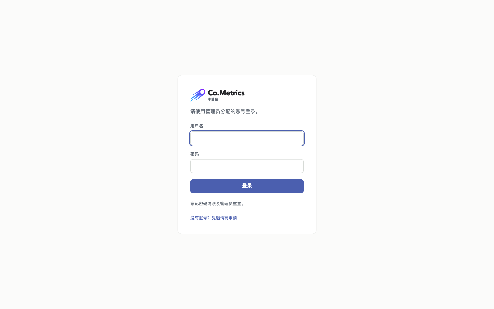
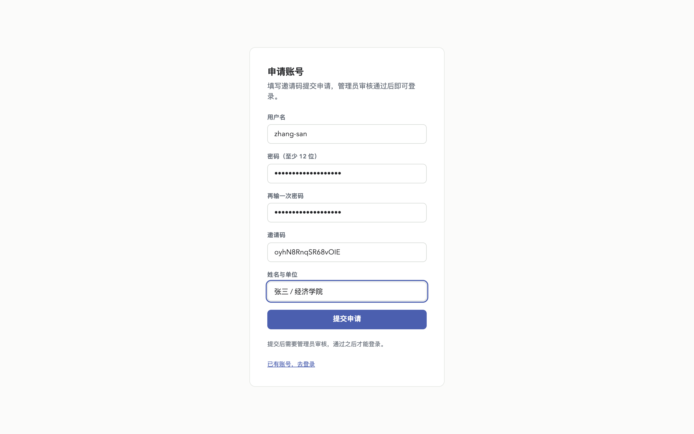
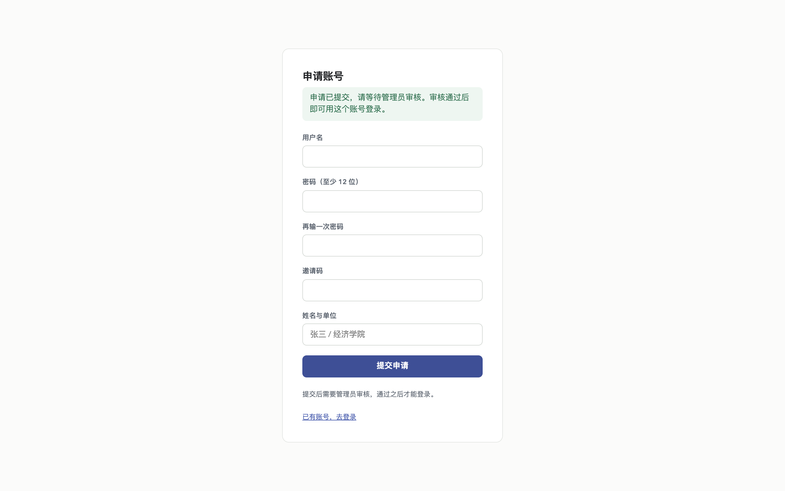
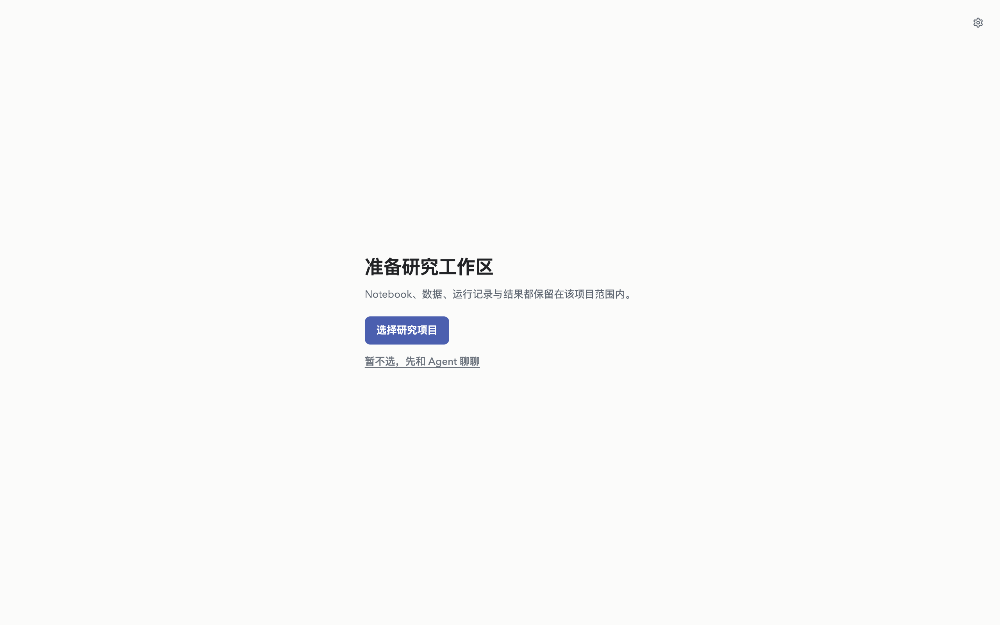
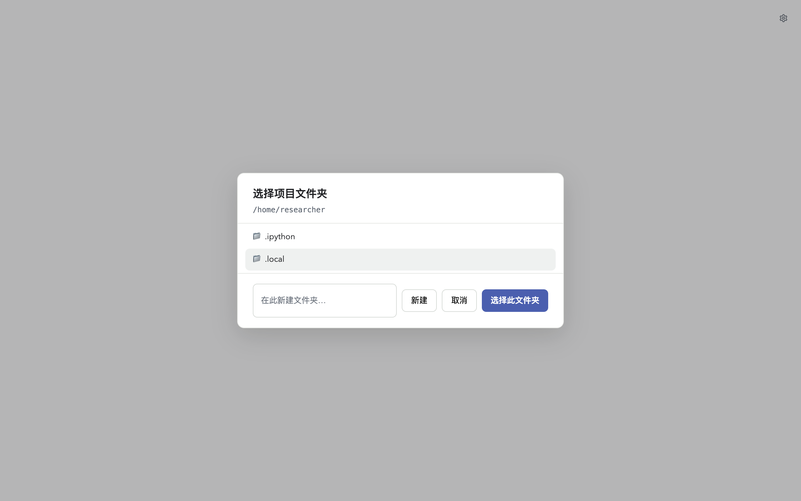
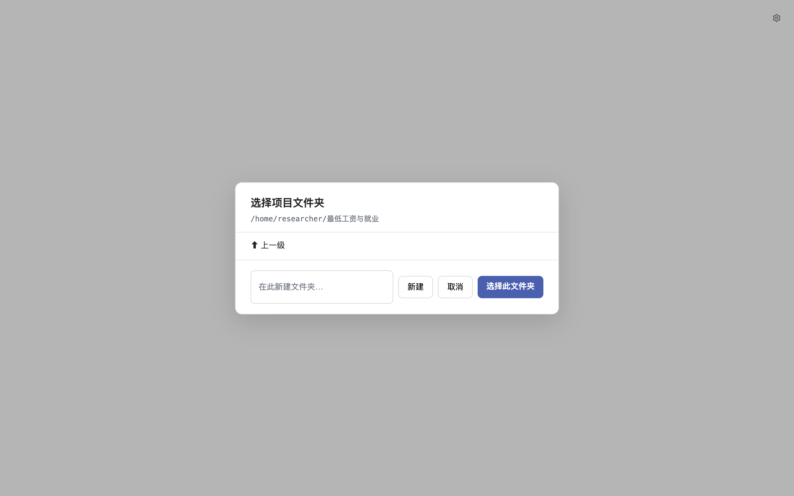
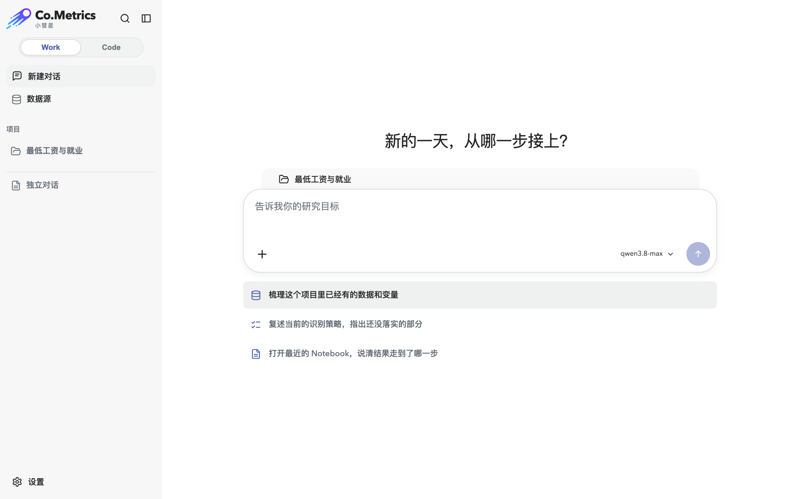
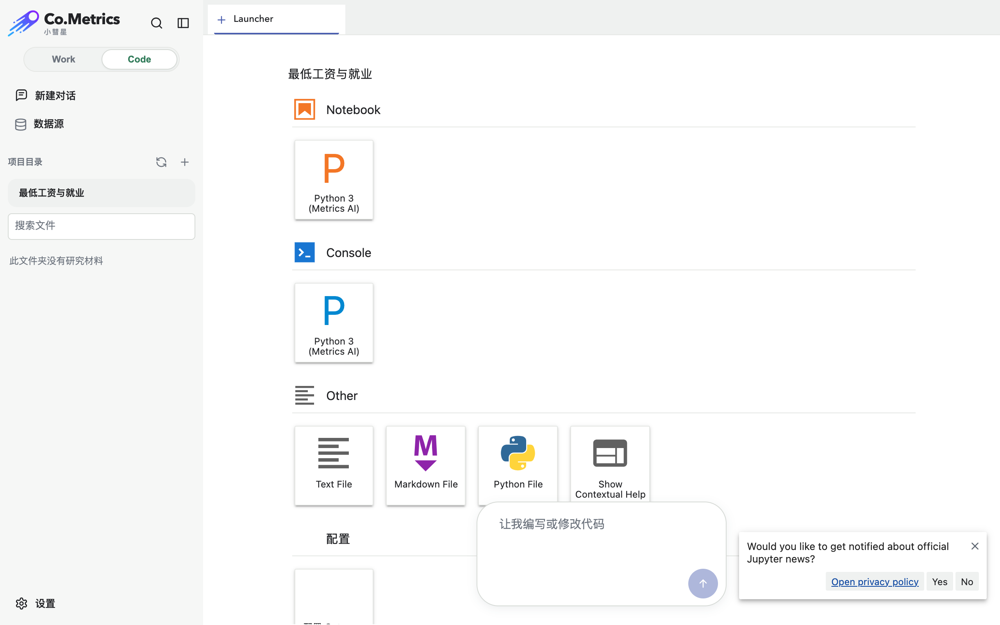
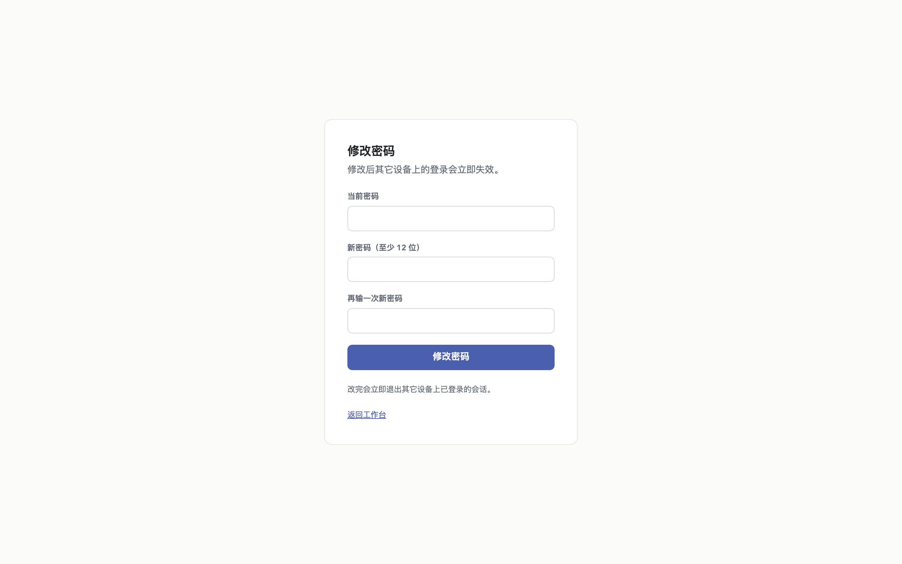

写给使用者：研究者、学生、课题组成员。你不需要懂服务器，也不需要装任何软件——一个浏览器就够。
A user manual for researchers and students: no server knowledge, no local installation — a browser is enough.
先说清楚这一件事，能省掉后面一半的困惑。
Co.Metrics 跑在一台服务器上，不在你的电脑里。你登录后拿到的是你专属的一间工作间——别人看不到你的文件，你也看不到别人的。
你的文件不会丢。工作间闲置一小时后会被自动回收以释放服务器资源，但你的项目、数据、Notebook 和结果全部保留，下次登录会原样回来（要多等 10–60 秒重新启动）。
两种来源，问一下你的管理员是哪种。
A. 管理员直接给你 —— 他会告诉你用户名和初始密码，跳到第 3 节。
B. 你自己申请 —— 管理员给你一个邀请码，你自己填表申请，他审核通过后生效。
打开网址，先到欢迎页，点「凭邀请码申请账号」：

填写申请表：

| 字段 | 要求 |
|---|---|
| 用户名 | 小写字母、数字、连字符，2–31 个字符，不能以连字符开头。比如 zhang-san |
| 密码 | 至少 12 位 |
| 邀请码 | 管理员给你的那串字符。一码一人，用过即失效 |
用户名为什么这么严？它会直接变成服务器上你那间工作间的名字，所以只能用最保守的字符。

这时还不能登录。要等管理员批准——催他一下。批准之后，用你刚才填的用户名和密码登录。
用你的用户名和密码登录。
登录后进入工作台。第一次可能要等 10–60 秒——服务器在为你启动专属工作间。

所有工作都在「项目」里进行，一个课题一个项目。
点项目选择器，新建一个项目：

建好之后，它就是你这个课题的根目录——数据、代码、结果都放在里面。

同一批文件，两种用法。
用自然语言提研究问题，AI 会读数据、写代码、跑结果、给解释。

点「Code」切过去，这是一个完整的 JupyterLab：

第一次进 Code 面，右下角可能弹出一个 JupyterLab 的新闻订阅提示（英文）。点 No 关掉即可，和 Co.Metrics 无关。
两个面共用同一批文件：Work 里 AI 写的 Notebook，在 Code 里能直接打开改；你在 Code 里存的数据，Work 里的 AI 也看得到。
默认只有 Python 内核。R 和 Octave 你自己装一次，装完就一直在。
为什么不预装好？预装意味着所有人被锁在同一个版本上，而那个版本往往不是最新的。自己装，你想用哪个版本就用哪个。
在 Code 面打开一个终端（左侧 Launcher 里的「Terminal」），粘贴这两条：
micromamba create -y -p ~/.local/runtimes/r -c conda-forge r-base r-irkernel
~/.local/runtimes/r/bin/Rscript -e 'IRkernel::installspec(user = TRUE, displayname = "R")'第一条装 R 本身（几分钟，取决于网速），第二条让它出现在 Launcher 上。刷新页面，新建 Notebook 时就多了一张 R 卡片。
想要特定版本，把第一条改成 r-base=4.5 这样即可。
micromamba create -y -p ~/.local/runtimes/octave -c conda-forge octave octave_kernel
~/.local/runtimes/octave/bin/python -m octave_kernel install --user同样刷新页面后生效。
install.packages("fixest")在 R Notebook 里直接这么写就行。包会装进你自己的工作间，而且是 CRAN 上的最新版。
用 micromamba install r-fixest 也能装上，但 conda 那边的 R 包更新往往滞后好几个月，计量方法包尤其明显——新方法出来了，conda 里还是旧的。所以运行时用 conda 装，包用 CRAN 装。
Octave 同理，用 pkg install -forge 包名。
AI 功能要先填自己的 API Key 才能用。左下角「设置」里填。
具体填哪家、填什么，问你的管理员——不同课题组用的模型可能不一样。
少量文件和整个文件夹都能直接在界面里传。
在 Code 面左侧文件树上方点上传按钮，选文件即可。整个文件夹也支持——直接选文件夹上传。
三条边界值得知道：文件落在项目根目录而不是你当前打开的目录；同名文件会变成「名字-2」而不是覆盖；上传的压缩包不会自动解压。
几个 GB、上万个文件这种规模，界面会比较吃力，找管理员要搬运脚本。
在文件树里右键，选下载。
单个文件直接下载。整个文件夹会打包成 zip 下载。
打包下载的 zip 里不含隐藏文件（以 . 开头的那些）。如果你的结果依赖某个隐藏配置文件，单独下载它。
左下角「设置」或管理后台页脚都有入口。
要先验证当前密码。改完之后，你在其它设备上的登录会立即失效，需要用新密码重新登录。

第一次登录或闲置回收后重新登录，需要 10–60 秒启动工作间。超过两分钟还不行，找管理员。
申请需要管理员批准才生效。催他。
不会。闲置一小时后工作间会被回收，但你项目里的一切都保留，下次登录原样回来。唯一的例外是写到项目目录之外的临时文件（比如代码里写死 /tmp/xxx）——用相对路径或存在项目里就不会有这个问题。
不能。Co.Metrics 跑在服务器上，看不到你的硬盘。要先上传，见第 8 节。
不能，每个人的工作间是隔离的——你装的 R、Octave 和它们的包只属于你，别人看不到，也不会被别人弄坏。反过来说，同组的人要用，各自装一次。
见第 6 节，自己在终端里跑两条命令，装完一直在。
不能，那两个要商业授权，不是装不装得上的问题。Octave 能跑绝大多数 MATLAB 语法的代码，DSGE 那条线（Dynare）就是走 Octave 的。
用 pip install --user 包名。装到你自己的工作间里，会一直留着。
先硬刷新一次（Mac 上 Cmd+Shift+R）。还不行就找管理员。